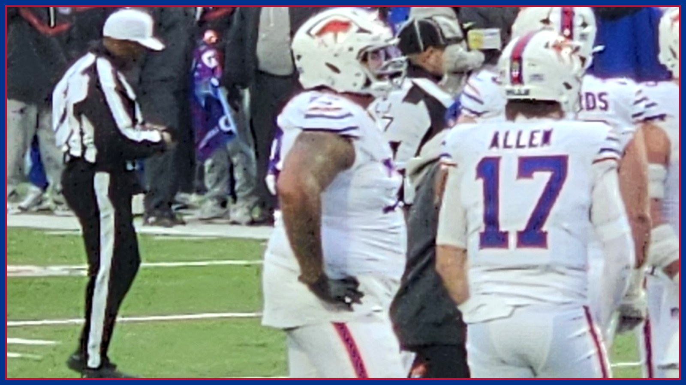

Dion Dawkins didn't practice all week. Buffalo still won't rule him out for Monday night.
Buffalo's final injury report is in: Dion Dawkins (rib) missed all three practices and is questionable for Monday night at Minnesota, Alec Anderson (ankle) upgraded to limited Saturday and is also questionable, and Joshua Palmer is out — while Spencer Brown, DJ Moore, Dalton Kincaid and Keon Coleman were all cleared with no designation.

Saturday was supposed to bring an answer. Instead, Buffalo's final injury report for Monday night brought a tighter version of the same question. Left tackle Dion Dawkins did not practice on Saturday — his third straight missed practice with a rib injury — and the Bills listed him as questionable for Monday Night Football at Minnesota (Nov. 9, 8:15 PM ET, ESPN/ABC), per the final Week 9 report published by the Vikings and confirmed by Bills on SI. Three DNPs usually end the conversation. With Dawkins, Buffalo is deliberately not ending it.
The quotes explain why. Dawkins told reporters Friday, per Bills on SI: “I feel good. I've been winning my battles off of the field to try my best to be available on Monday.” Head coach Joe Brady backed that approach Saturday: “Some of these guys have played so much football, I have a trust that they know what their assignment is and that they can handle it,” Brady said, per the same report. “Had a conversation with Dion earlier in the week, and was like 'hey, let's do what we gotta do to be able to get to the game.' We'll continue to evaluate and play on Monday.” Translation: this is not a practice-reps decision. If Dawkins' ribs can take a hit Monday night, a man who has missed only two career starts due to injury, per Bills on SI, starts — zero practice week and all.
Dawkins is not the whole left side, and the other half moved the right way Saturday. Left guard Alec Anderson, who injured his ankle on the opening drive against Baltimore on Nov. 1, exited to the blue tent, returned after missing only two snaps and was later spotted in a walking boot leaving the locker room, per Bills on SI, was upgraded from did-not-practice to limited on Saturday and is also listed questionable, per the final report. Anderson getting any work in on the last day is a genuinely better sign than Dawkins' empty week — but questionable is questionable, and Buffalo could still be replacing one starter, or two, on Josh Allen's blind side. If Dawkins cannot go, backup Tylan Grable will prepare to replace him at left tackle, per Bills on SI.
Now the good column, because Saturday delivered plenty of it and it should not get buried under the headline. Right tackle Spencer Brown improved to a full participant Saturday and carries no game designation — he has been cleared for Monday night after missing the Baltimore game with a back injury, per Bills on SI and the final report. The red-jersey crew is cleared too: wide receiver DJ Moore (shoulder), tight end Dalton Kincaid (chest) and wide receiver Keon Coleman (shoulder) all carry no designation and have been cleared for Week 9, per Bills on SI. Cornerback Dee Alford was a full participant all week, Khalil Shakir returned Saturday after Friday's personal absence, and running back Ty Johnson is back to full, per the final report. The offense Allen will actually throw to is intact. The question is only who is standing in front of it.
The rest of Buffalo's designations are narrower. Wide receiver Joshua Palmer (hamstring) is out — the only Bill ruled out — after missing practice all week, per the final report. Defensive tackle Greg Gaines (calf) was upgraded to limited Saturday and is questionable. Defensive back Jordan Hancock (hamstring) and wide receiver Tyrell Shavers (knee) are also questionable, and both would need to be activated — Hancock from injured reserve, Shavers from the physically unable to perform list — to play Monday, per NBC Sports. Those are roster-move questions for Monday afternoon, not just injury questions.
Minnesota's final report, for its part, mostly closed doors Buffalo already knew about. Quarterback Kyler Murray (hamstring), running back Demond Claiborne (knee) and receiver Jauan Jennings (calf) are out, and safeties Theo Jackson (quad) and Jay Ward (knee) are questionable, per the Vikings' final report. Tackle Christian Darrisaw, linebacker Jake Golday, cornerback Isaiah Rodgers and outside linebacker Andrew Van Ginkel received no designations and are expected to be available, per the same report. Carson Wentz starts at quarterback — settled since Thursday — which means the Vikings' defense, not their offense, remains the fully loaded half of this matchup.
And that is why a rib injury in Orchard Park is the biggest story of a Sunday the Bills do not even play on. Minnesota records a sack on 12.32 percent of all pass attempts and gets home more frequently than any other unit in the NFL, per Bills on SI — the pass rush Buffalo's patched left side would meet in the loudest building on the schedule. A whole offensive line makes Monday night what it was billed as all week: the league's No. 1 offense against its No. 1 defense, 6-1 against 6-1. A backup left side makes it something else entirely — a survival test Allen has passed before, but never one Joe Brady would volunteer for.
So Sunday in Buffalo is a waiting room. Bills fans get the afternoon slate — including New England, the only team to beat Buffalo this season, hosting Green Bay at 4:25 PM ET, per Athlon — and then one more day of not knowing. Questionable is not a verdict, and this desk will not print it as one: Monday's inactives, about 90 minutes before kickoff, are the last word on Dawkins, Anderson, Gaines and the activation calls. Until then, the most honest sentence in football is the one on Buffalo's final report: Dion Dawkins, rib, did not practice, questionable. Everything about Monday night runs through whether that changes by game time. Go Bills — and get the inactives and the full Monday night fallout in your inbox every morning with The BNC Blitz.
The BNC Blitz is free: the day's Bills news, one stat that matters, and one take, every morning. Join to keep reading — and never miss the end of a story again.